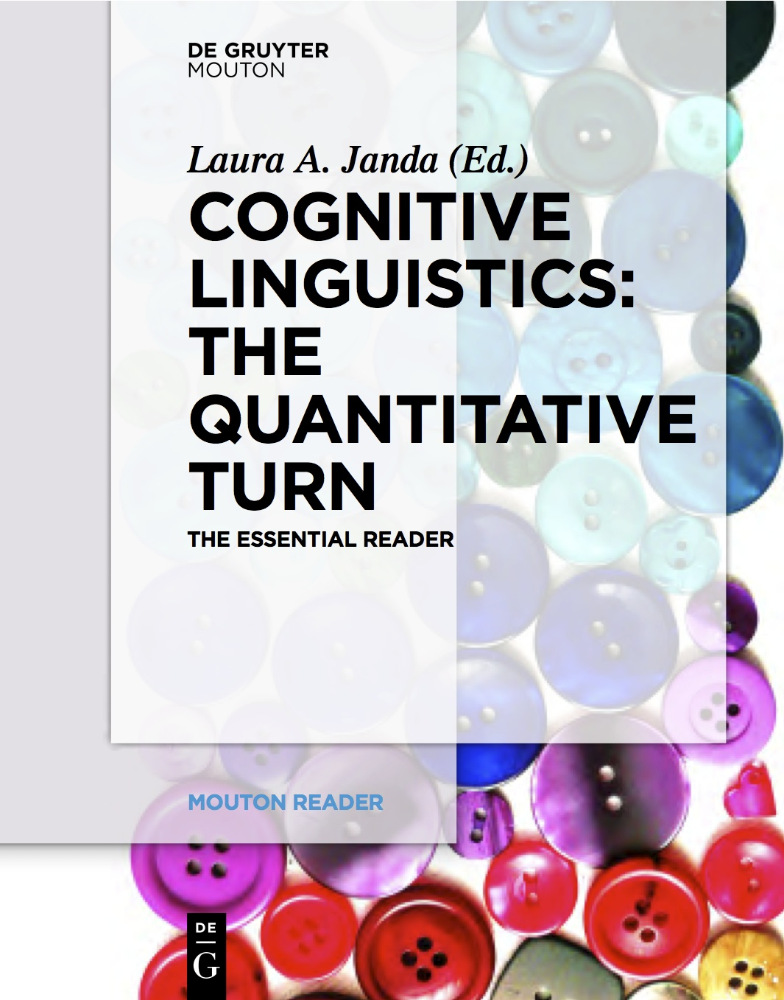

Laura Janda’s Home Page |
 |
Email: laura.janda"at"uit.no |
|
Address: HSL fakultet, Universitetet i Tromsø, N-9037, Tromsø, Norway |
Laura Janda’s Home Page |
|
Email: laura.janda"at"uit.no |
|
Address: HSL fakultet, Universitetet i Tromsø, N-9037, Tromsø, Norway |

Why Russian aspectual prefixes aren’t empty: prefixes as verb classifiers. Laura A. Janda, Anna Endresen, Julia Kuznetsova, Olga Lyashevskaya, Anastasia Makarova, Tore Nesset, Svetlana Sokolova. Bloomington, IN: Slavica Publishers. 2013. 227pp. Find out more about this book HERE and link to the data here. Buy a copy from Slavica Publishers at this link. |
 |
Cognitive Linguistics: The Quantitative Turn. The Essential Reader Laura A. Janda (ed.). 2013. De Gruyter Mouton. 321 pp. Buy a copy from De Gruyter Mouton at this link. |
 |
Laura Janda's conference presentations
Laura Janda’s Teaching Portfolio: Partnering with Students in the Pursuit of Knowledge
CLEAR Research group (CLEAR = Cognitive Linguistics: Empirical Approaches to Russian)
THREAT-DEFUSER project on Hybrid warfare and a plan to safeguard societies, financed by a grant from the Norwegian Research Council
TWIRLL: Targeting Wordforms in Russian Language Learning, a project financed by a grant from the Direktoratet for internasjonalisering og kvalitetsutvikling av høyere utdanning. See also this site touting TWIRLL as an exemplary project.
SMARTool (Strategic Mastery in Acquiring Rich morphology Tool) for English-speaking learners of Russian; see also our instructional video
Min russiske reise MOOC (FEIDE login required)
SMARTool (Strategic Mastery in Acquiring Rich morphology Tool) for Min russiske reise
Russian Constructicon; see also our YouTube Channel and Construxercize! exercises for use with the Russian Constructicon.
Cluster Types for Russian Verbs
Case Book for Russian and Case Book for Czech Interactive Exercises
Quick link to CRIStin